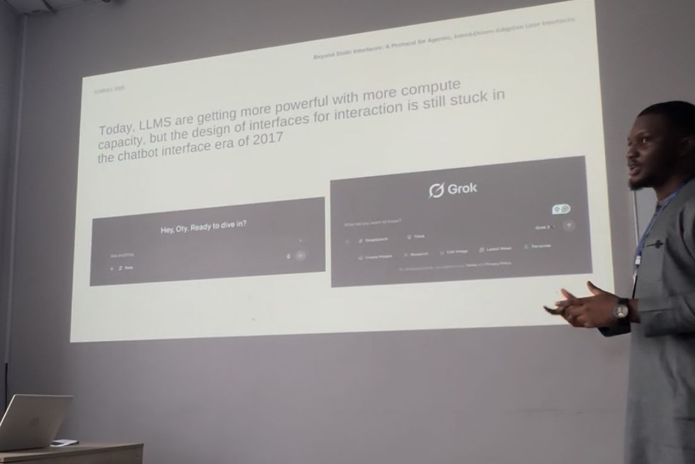
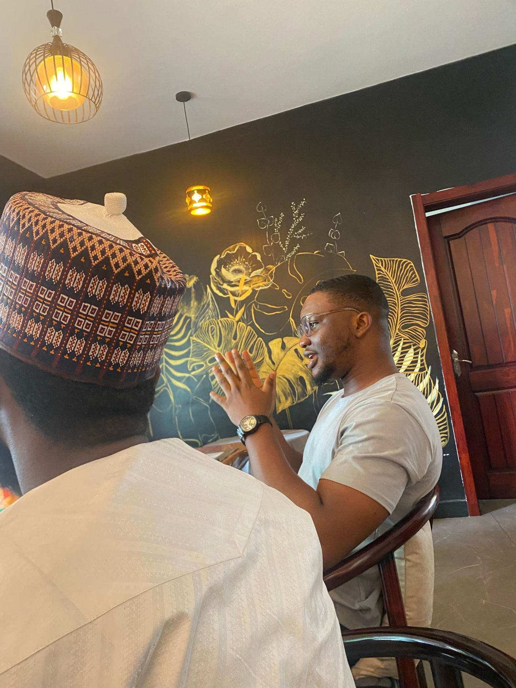
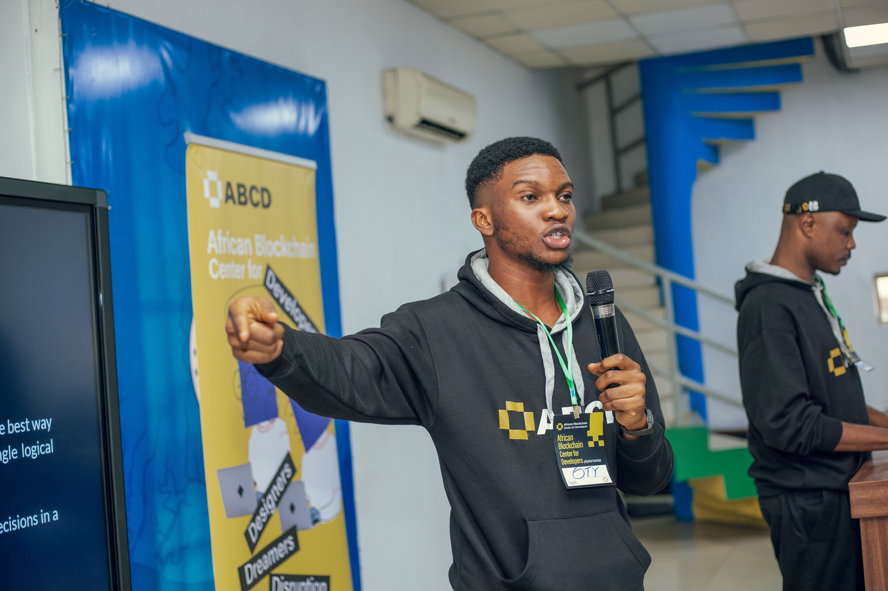

Bio - Career Trajectory - Projects
First line of C++
I wrote my first line of C++ in 2014, and picked up the habit of tinkering with things. I learned game development & worked on different web design projects.
Facial recognition, microcontrollers, IoT devices
I got into hardware development & prgramming, working with microcontrollers, IoT devices, and facial recognition systems. My undergraduate thesis grew out of one of those projects: a facial recognition based door lock.
Working on embedded systems taught me to think beyond writing code. Every layer matters, from the hardware all the way to the user.
Chapter Lead
As my interests grew, I found myself drawn to software engineering, distributed systems and the communities around them. In 2020, I was selected to lead the Google Developer Student Club at Rivers State University, helping students learn software engineering through talks, workshops, and hands-on projects.
Onboarding developers into blockchain; building real products
I later co-founded ABCD Technologies to help African developers build real blockchain products, and helped grow the Blacks in Technology Nigeria chapter into an award-winning community.
Ownables, GoLand land registry, and the migration to Base
Professionally, I joined LTO Network, now EQTY, working on blockchain infrastructure for digital identity and real-world assets.
I owned Ownables, exploring how assets like property, shares, and collectibles could live inside wallets with programmable ownership and embedded smart contract logic. I also worked on GoLandRegistry, a blockchain land registry originally built with the United Nations for Afghanistan, expanding it for deployment in Burkina Faso.
When LTO transitioned to EQTY and migrated from its own L1 to Base L2, I led the migration of core assets and supporting infrastructure.
AI-powered requirements traceability
My MSc. research focused on how to design context aware AI systems to improve requirements traceability & completeness in software systems, combining llms, knowledge graphs, semantic search etc to answer a question I keep running into: how do large systems stay understandable as they grow?
Fractional trade finance and cross-border payments on stablecoins
After that, I architected and led development of Fraqtion Finance, using stablecoins to simplify fractional trade financing and cross-border payments — making trade financing more accessible and offering a crowdfunding-based alternative to capitalizing trade, with near-zero interest rates.
Now
I'm always building. The problems of the future are complex, and I want to be part of the teams that solve them.
How sovereign AI infrastructure for regulated African industries becomes its own category — not "AI for Africa" but AI that takes data residency as a first-class constraint.
How AI and software can improve healthcare, financial infrastructure, and enterprise systems.
B.Tech in Electrical and Electronics Engineering. M.Sc. in Software Engineering.
Skills & Tools


